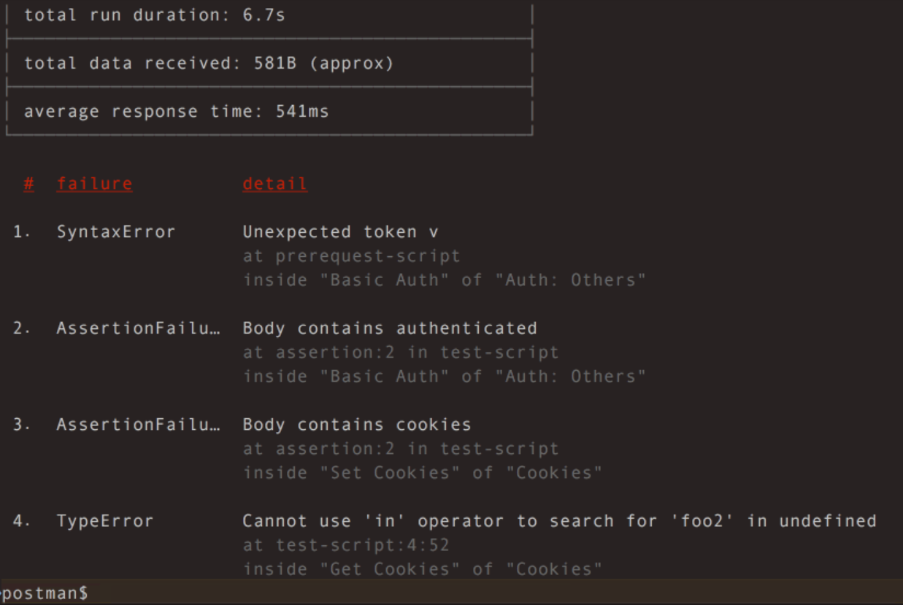

## Putting the Security in SecDevOps "Using pipelines, automation and agile practices improve cybersecurity." **- or -** ***"How I learned to stop worrying and love Pull Requests"*** Presented by: - Edward Delaporte, Technology Services - David Riddle, Technology Services - Michelle Pitcel, Technology Services - Zachary Carrington, Technology Services ??? We will walk through a high level overview of the ways a DevOps pipeline can make your work day better and while making your products secure - even if the product is from a vendor! Track: Cloudy with a Chance of Terraforming 2:30 - 3:15 pm - Zoom Room D - https://www.itproforum.illinois.edu/sessions --- ## About my Team The Cybersecurity Development and Assurance team will help software development and operations teams across the University protect servers from cyber-threats and other disruptions. Keep an eye out for us to provide: - training events - open source recipes, scripts and playbooks Please also use us when you need a SecDevOps perspective toward solving a problem. (securitysupport@illinois.edu) --- ## A Vision for **Sec**DevOps When a cybersecurity geek reads "The Agile Manifesto": - Individuals and interactions over ~~processes and tools~~ **automated cybersecurity scan emails**. - Working **and secure** software over comprehensive documentation. - Customer collaboration over ~~contract~~ **bug priority** negotiation. - Responding to ~~change~~ **zero day patches** over following a plan. ??? - Just tape "Sec" to the beginning of everything and call it a day. - Minor changes can have big cybersecurity improvements. - Minor changes sometimes only happen if you have confidence. - CI/CD gives you confidence. - Automation gets to "good enough" sooner if the cybersecurity plan is figured out in advance. TODO: - Pictures for each tool... - DONE: Charts of how each tool connects... --- ### Routine Feedback through CI/CD Pipelines A GitHub "Pull Request" can automatically gather and present feedback: <img class='stretch' src='img/itpro2020spring/GitHubFeedback.PNG'/> ??? Get your code changes and their impacts sit side-by-side. Even if there are no code changes - just config or a deployment, this pattern still works. You can automated feedback for: - Code Test Coverage - API compatibility (Integration Tests) - Known Regressions (prevent past bugs) - Cybersecurity posture (static code scan, external scan) --- ### Automation with Drone CI / CD Example `.drone.yml` file: ```YAML pipeline: build: image: python:2.7 commands: - apt-get update && apt-get install -y build-essential python2.7-dev libldap2-dev libsasl2-dev - export DOCKER_RUN="bash -c" - export PYTHONPATH="$PWD/lib/cites/jira:$PWD/lib/cites/opia" - pip install -r requirements.txt - $(DOCKER_RUN) 'pytest tests/unit' - $(DOCKER_RUN) 'flake8' ``` ??? - CI / CD can kick off any command line takes - Look for common tools for your environment - You can and should test products you did not write - Using Drone now, but looking into GitHub Actions as part of our move to GitHub Enterprise --- #### Automated Unit Testing Pro - ***Fast***. - Runs anywhere. - Answers "What did we expect?" - The easiest regression tests are unit tests. Con - Hard to add to Legacy Code - Doesn't answer "Why did we do that?" - Many **regressions** cannot be unit tested without a refactor. <img class='stretch' src='img/itpro2020spring/UnitTestExample.PNG'/> ??? - We care about regressions because they are how we prevent repeat bugs. - Vulnerabilities in the wild are often repeat bugs. --- #### Automated Unit Testing --- #### Automated Integration Testing - [Newman for Postman][11] --- #### Automated Integration Testing Pro - Catches problems that cross areas. - The best regression tests are integration tests. Con - Depends on external services, configuration, uptime. - Calls need to be indepodent (repeatable / read-only). --- #### Automated Integration Testing Newman Example  ??? - How is it different? - Why integration test? - Catches what you didn't even think to test for. --- #### Automated Integration Testing - [Selenium with RoboFramework][12] --- #### A Large Example CI / CD Solution ## Agility <img class='stretch' src='img/secops2020spring/SecOpsDeploy_Why.PNG'/> --- ## Agility - The Foundation: Collaboration on GitHub - --- ## Cybersecurity Liaisons Group Join the Security and Privacy Liaison Community and connect with your colleagues. Monthly online meetings: First Thursday of the month at 9:30am. Mailing List: ps-techliaisons@lists.illinois.edu Microsoft Teams: Security & Privacy Liaison Community U of I Box Folder: Security and Privacy Liaison Community: (Mailing list members will be granted access. Otherwise send email to sthomp@illinois.edu to be added.) ??? - this is a new extension of the former program. - Anyone is welcome to join - benefit from the shared expertise available in the community. --- ## GitHub Enterprise Shared Service - Email the Shared Service team: githubsupport@uillinois.edu - Website: https://github.uillinois.edu --- ## Source Code - [An Python Microservice on Docker][3] - [PowerShell client for Accessing DMI Data][1] - [PowerShell client for Contacts Database][2] [3]: https://github.com/techservicesillinois/secdev-quarantinenetwork [1]: https://github.com/techservicesillinois/SecOps-PowerShell-DMI [2]: https://github.com/techservicesillinois/SecOps-PowerShell-CDB ??? - We are a new team. - Mostly talking about vaporware and dreams today, but that will change. - We have done SOME things already. --- ## Tools - [PostMan][10] - [NewMan][11] for PostMan command line. - [University of Illinois System Shared GitHub Service](https://web.uillinois.edu/github) - [Docker])https://www.docker.com/why-docker) - [RobotFramework][12] - [Ansible](https://www.ansible.com/) [10]: https://www.postman.com [11]: https://github.com/postmanlabs/newman [12]: https://robotframework.org/ ??? - Kudos and thanks to everyone who has worked on the shared GitHub service! --- ## Q & A --- ## Bonus Slide: Why not basic auth? - Not terrific from a security perspective. Tends to carry a secret is good for a lot more than it needs to be good for. - Tends to get stale - doesn't come with great ways to rotate the keys. You could bolt this on. - Most importantly, the tech underneath is doesn't auto-update when security techniques move on. - Doesn't carry additional information like claims. - Doesn't integrate great with the tooling you might not know you want yet. i.e. API gateway integrations. --- ## Bonus Slide: OAuth and JWT --- ## OLD SLIDES FOLLOW --- ### Why Change our Script Environment? - The Goal: **Agile Cybersecurity Automation**. - The talent on this team merits a platform that can keep pace. --- ### Demo - Get a DEV copy of settings.ini. - Run the commands: ```powershell choco install docker-desktop choco install make make build make shell ``` - use `brew` instead of `choco` on Apple. - use `apt-get` instead of `choco` on Linux. --- ### What's New? - **GitHub Enterprise** provides a collaboration platform around Git that increases visibility into solutions and reduces time costs of developing solutions. - **Docker** is going to let us to each have a functioning development environment on our local laptop. This currently takes 4 commands. - **Ansible** is a good enough repeatable way to deploy Python code versioned in git to the server, and we've solved a similar need with it before within SDG. One or several pip packages is a possibility, but is not critical at this time. - **Drone CI/CD** will be setup to automatically deliver code changes to production. - **Terraform** will be critical later when we start deploying to the cloud. --- ### On the Horizon - Deliver Cybesecurity automation where we want it - i.e. Splunk. - The **Cybersecurity Team** will be asked to make changes using `git` and `pull requests`. - Adding a `pull request` does add a delay to the release cycle. The typical delay on my team has been **6 minutes**. You do *not* have to stop working while you wait. --- ### Next Week - **Cybersecurity Incident Responders** will, for now, continue to log into the production host to run the production scripts. - ***It will become possible to lose work if you make changes only on production.*** - The legacy DEV and TEST servers will eventually be less functional than the new Docker environments we are providing. - Any `master` branch in GitHub that drives a deployment pipeline will be configured to reject direct changes. You will have to use a `pull request`. --- ### What to do now? - Read `Pull Requests` that you see linked in the SecDevOps channel. - Participate in discussion in the SecDevOps channel. - Bring your scripting headaches to the SecDevOps channel. --- ### Take the Lead - Give the Docker DEV environment a try. - Read some Git resources. - Collaborate with SecDev to create your first `pull request`. --- ### Resources - [Software Carpentry Git Traininig](https://swcarpentry.github.io/git-novice/) - Diagrams were created in [Archi - Open Format](https://www.archimatetool.com/download/). See `SecOps.archimate` file for diagram source. Image was done via Snipping tool.